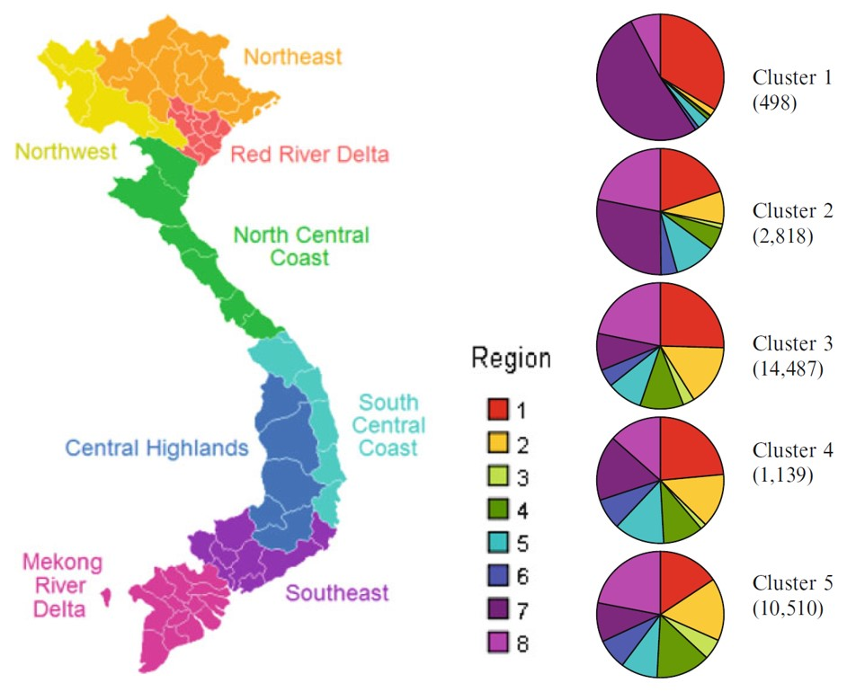
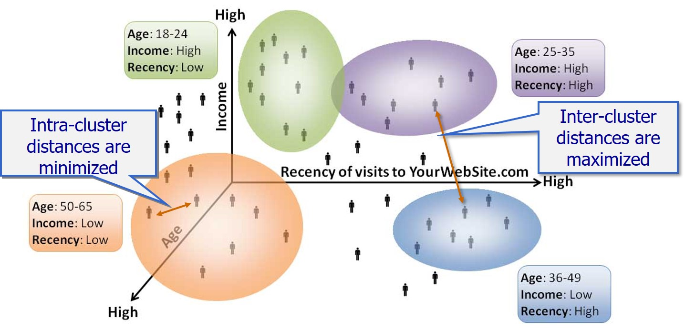
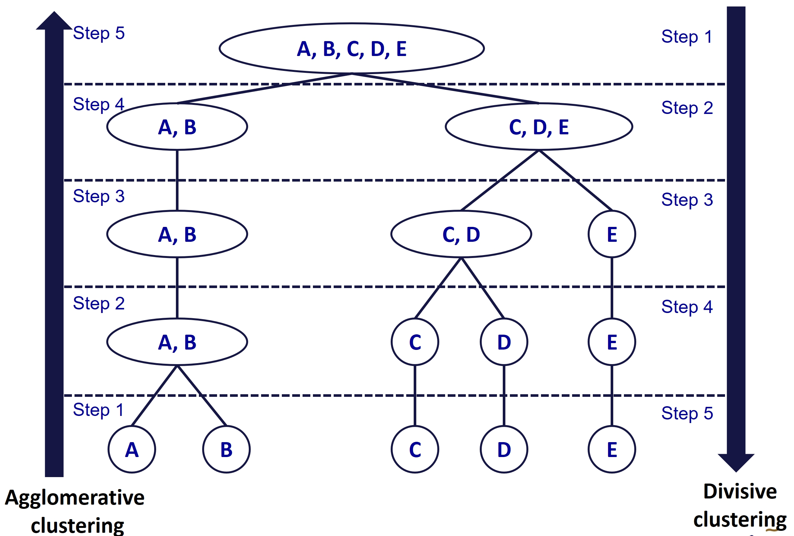
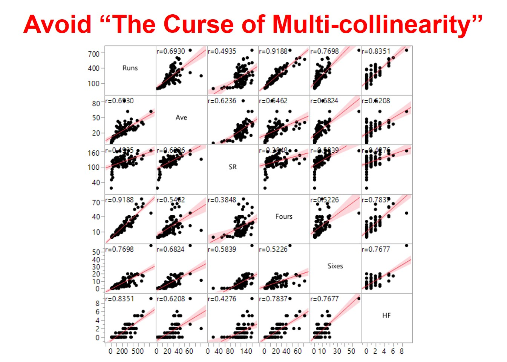
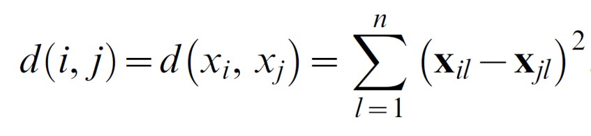
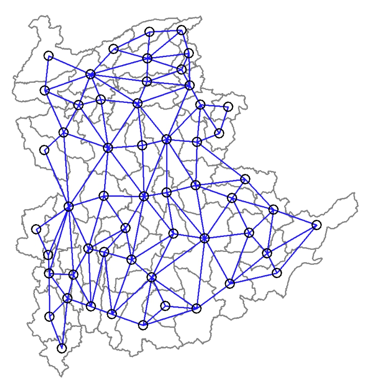
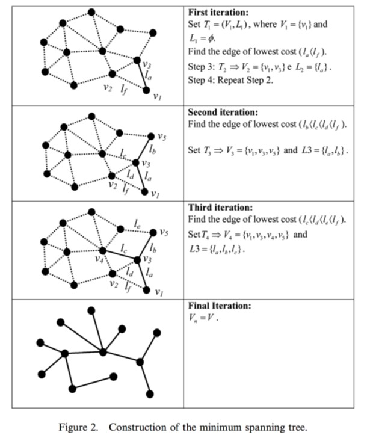
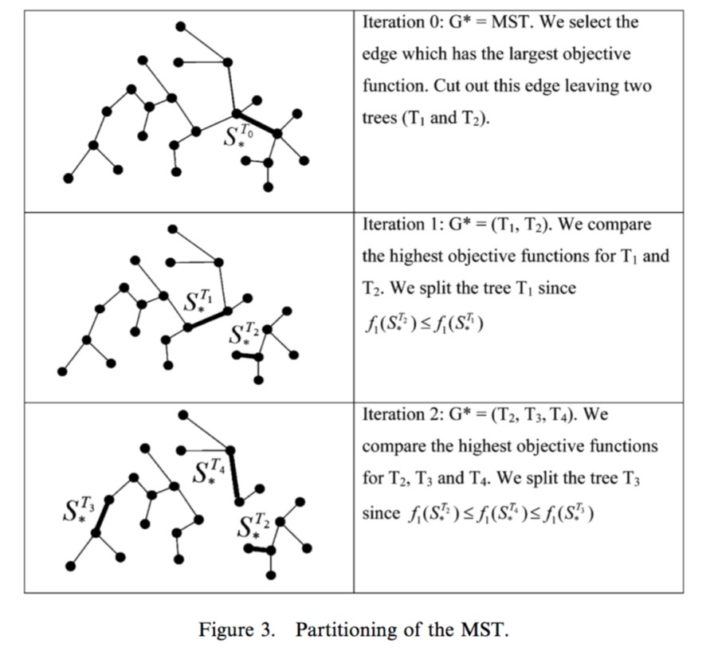

Content
What is Geographic Segmentation?
Introducing Cluster Analysis
Hierarchical Class Analysis
Cluster Analysis Process
Spatially Constrained Clustering Techniques
School of Computing and Information Systems,
Singapore Management University
26 Feb 2023
What is Geographic Segmentation?
Introducing Cluster Analysis
Hierarchical Class Analysis
Cluster Analysis Process
Spatially Constrained Clustering Techniques
Geographic segmentation divides a target market by location so marketers can better serve customers in a particular area.
This type of market segmentation is based on the geographic units themselves (countries, states, cities, etc.), but also on various geographic factors, such as climate, cultural preferences, populations, and more.
For business applications of geographic segmentation, refer to this blog post

It’s an effective approach for companies with large national or international markets because different consumers in different regions have different needs, wants, and cultural characteristics that can be specifically targeted.
It can also be an effective approach for small businesses with limited budgets. They can focus on their defined area and not expend needless marketing dollars on approaches ill-suited for their target geographic segment.
It works well in different areas of population density. Consumers in an urban environment often have different needs and wants than people in suburban and rural environments. There are even cultural differences between these three areas.
Cluster analysis or Clustering is the task of grouping a set of an object in such a way object in the same group(called cluster) are more similar( in some sense or another to each other than to those in another group (clusters).
In modern machine learning age, it is belong to the family of exploratory data mining.
It has been used in many fields including Machine Learning, Pattern Recognition, Image Analysis, Information Retrieval, Bioinformatics, Data Compression, and Computer Graphics.



The most common types methods are:
Maximum or complete linkage clustering: It computes all pairwise dissimilarities between the elements in cluster 1 and the elements in cluster 2, and considers the largest value (i.e., maximum value) of these dissimilarities as the distance between the two clusters. It tends to produce more compact clusters.
Minimum or single linkage clustering: It computes all pairwise dissimilarities between the elements in cluster 1 and the elements in cluster 2, and considers the smallest of these dissimilarities as a linkage criterion. It tends to produce long, “loose” clusters.
Mean or average linkage clustering: It computes all pairwise dissimilarities between the elements in cluster 1 and the elements in cluster 2, and considers the average of these dissimilarities as the distance between the two clusters.
Centroid linkage clustering: It computes the dissimilarity between the centroid for cluster 1 (a mean vector of length p variables) and the centroid for cluster 2.
Ward’s minimum variance method: It minimizes the total within-cluster variance. At each step the pair of clusters with minimum between-cluster distance are merged.
To perform a cluster analysis in R, generally, the data should be prepared as follows:
Checking if the input variables are highly correlated (i.e. correlation coefficient >=0.85).
Spatial Kluster Analysis by Tree Edge Removal Assuncao (2006) algorithm.
Construct minimum spanning tree from adjacency graph.
Prune the tree (cut edges) to achieve maximum internal homogeneity.
Reference: AssunÇão, R. M ; Neves, M. C ; Câmara, G ; Da Costa Freitas, C (2006) “Efficient regionalization techniques for socio-economic geographical units using minimum spanning trees”, International Journal of Geographical Information Science, Vol.20 (7), p.797-811 .
Network connectivity based on adjacency between nodes (locations).
Edge value reflects dissimilarity between nodes.



